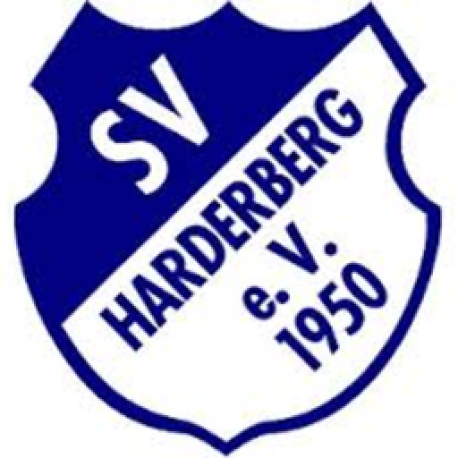
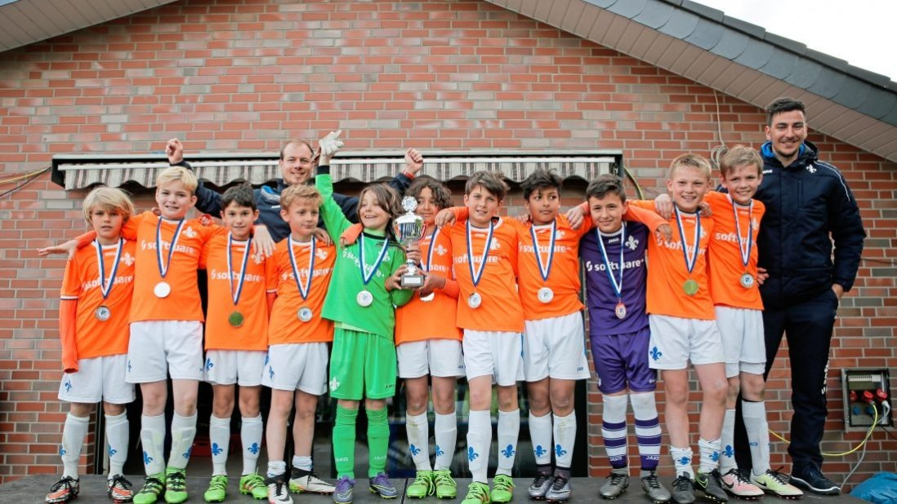
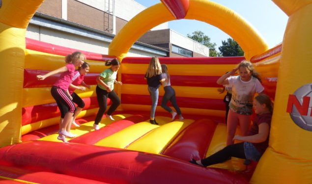

Pfingstcup Harderberg
Der Pfingstcup in Harderber wird jedes Jahr,wie der Name schon sagt,an Pfingsten ausgeführt. Dieses Jahr wurde der 42 Pfingstcup gespielt . Der Pfingstcup war die letzten 42 Jahre immer ein E Jugend Turnier, jedoch wird es ab nächstem Jahr ein D Jugend Turnier sein.
 Wenn ihr mehr über die Geschichte des Pfingstcups wissen wollt dann klickt auf das Logo vom Sv Harderberg

wenn ihr die Sieger der letzten 42 Jahre auf einem Blick sehen wollt dann klickt auf das Bild
 Wenn ihr auch noch über die Atraktivitäten Informiert werden wollt dann klickt auf das Bild